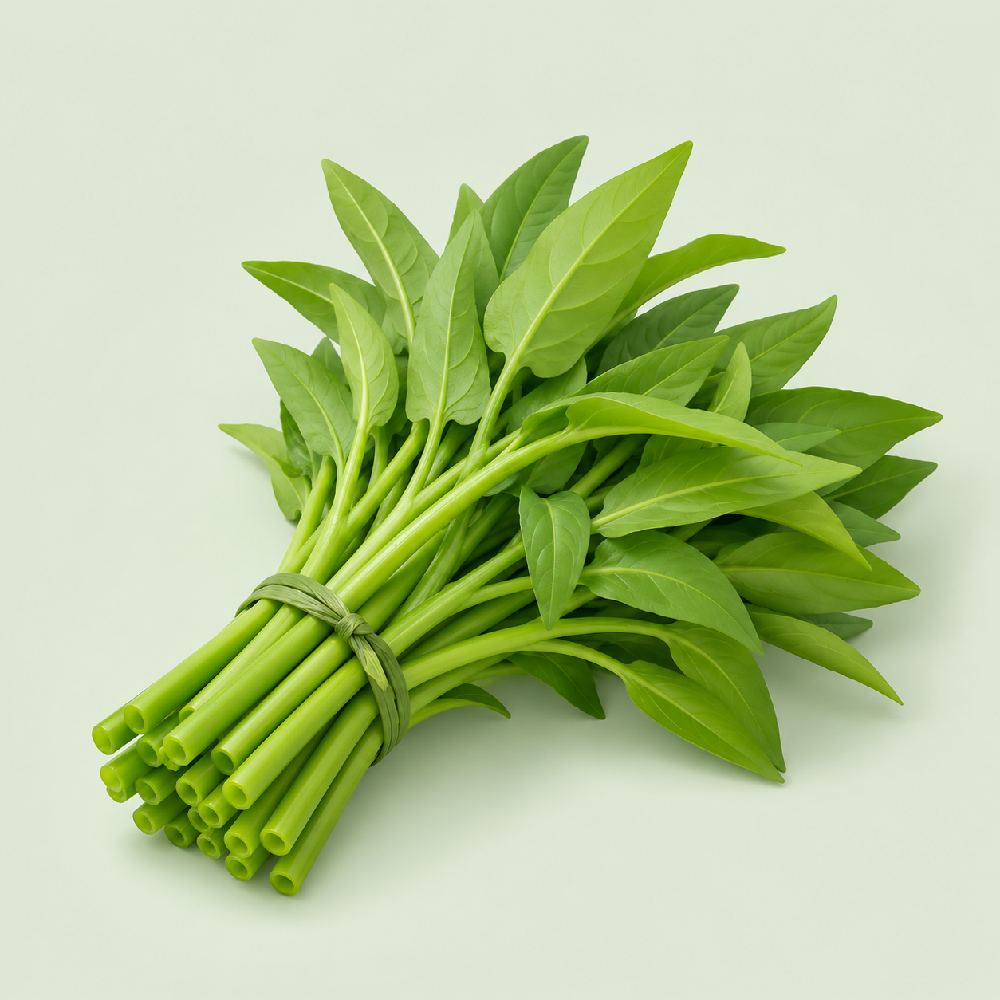
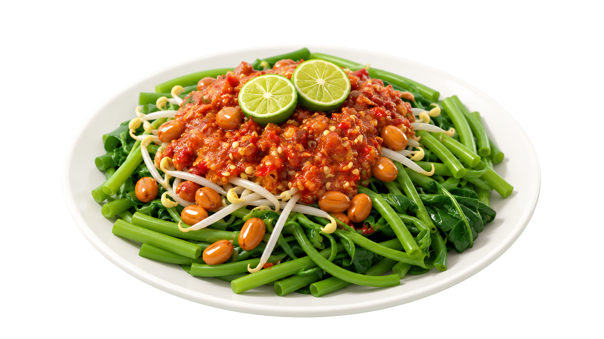
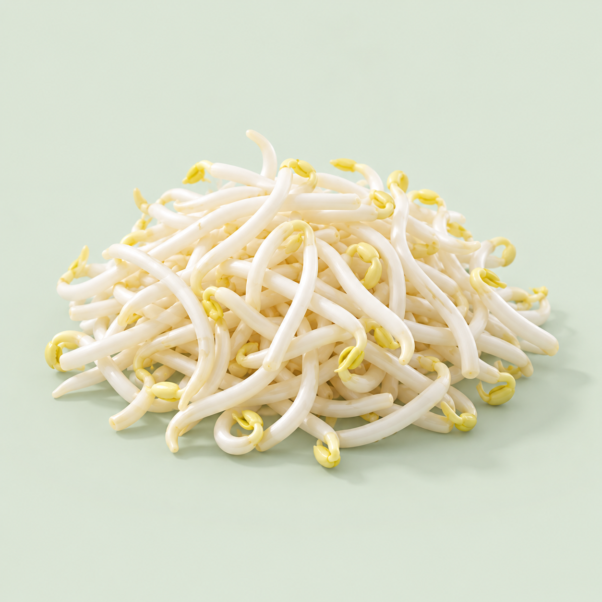
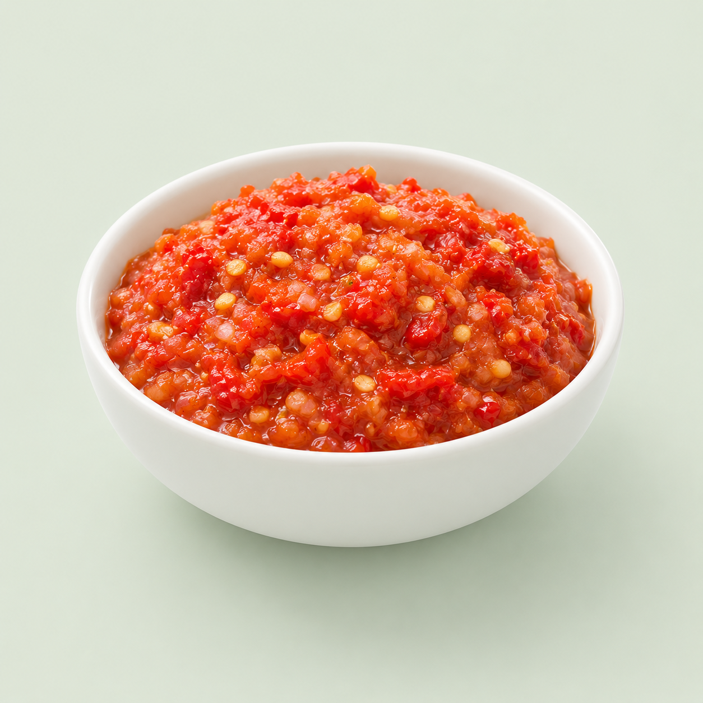
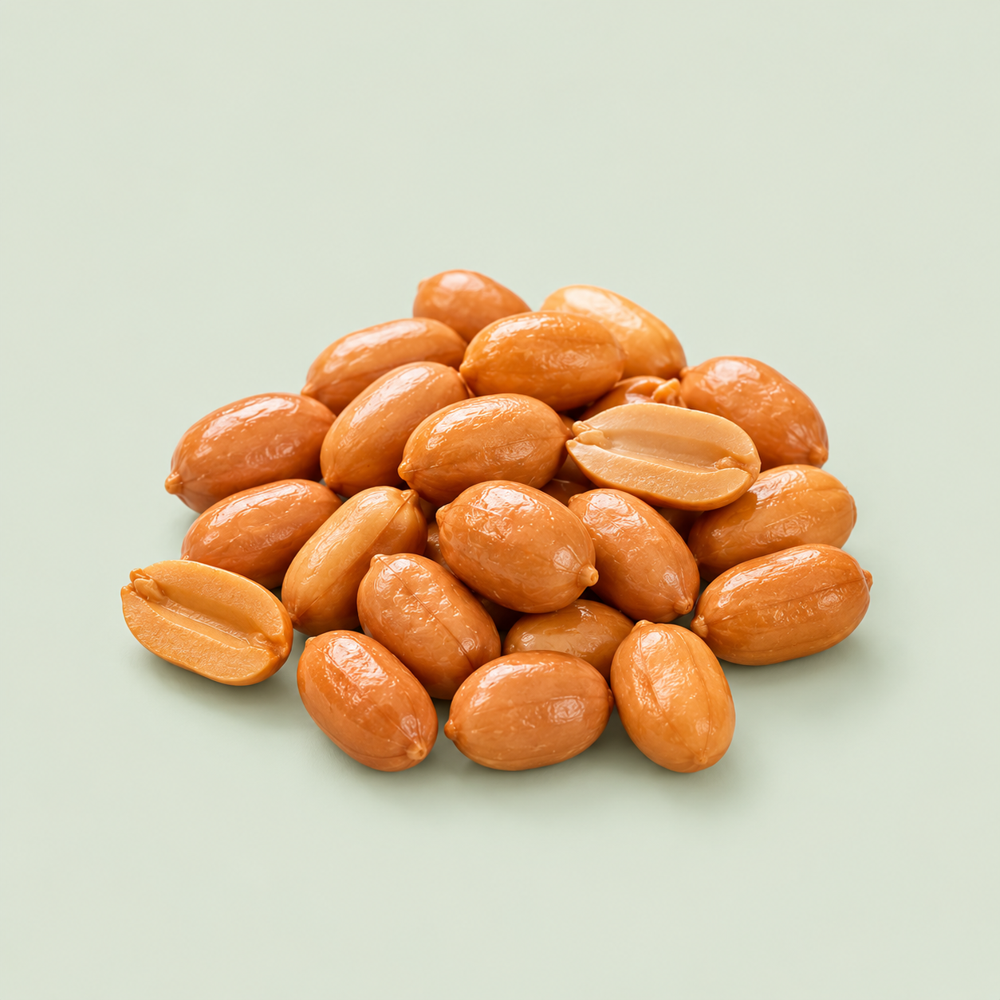

Kangkung Segar
Direbus sebentar agar tetap renyah dan kaya serat.
Kangkung rebus segar dan tauge pilihan, disiram sambal tomat mentah pedas dengan perasan jeruk limau, ditaburi kacang tanah goreng — hidangan ringan kaya rasa dari Pulau Seribu Masjid.

🥬🌶️Menu favorit
Segar setiap hari
Komposisi autentik
Hanya bahan segar berkualitas — dari petani lokal hingga ke dapur Anda.

Direbus sebentar agar tetap renyah dan kaya serat.

Tekstur renyah yang melengkapi kesegaran kangkung.

Cabai, tomat, bawang, dan jeruk limau — diulek segar.

Goreng garing sebagai sentuhan akhir yang gurih.
Tradisi penyajian
Plecing kangkung disajikan dingin atau suhu ruang. Sambal dituang di atas sayuran baru saat akan dimakan — agar kerenyahan dan rasa pedas tetap maksimal.
Tanpa MSG
Rasa alami bumbu segar
Level Pedas
Bisa disesuaikan pesanan
Cocok untuk acara keluarga, kantor, & warung mitra
Minimum order fleksibel — hubungi untuk penawaran
Pesan untuk katering harian, acara keluarga, atau kemitraan restoran. Balas cepat via WhatsApp.
Ganti nomor WhatsApp di kode dengan nomor bisnis Anda.